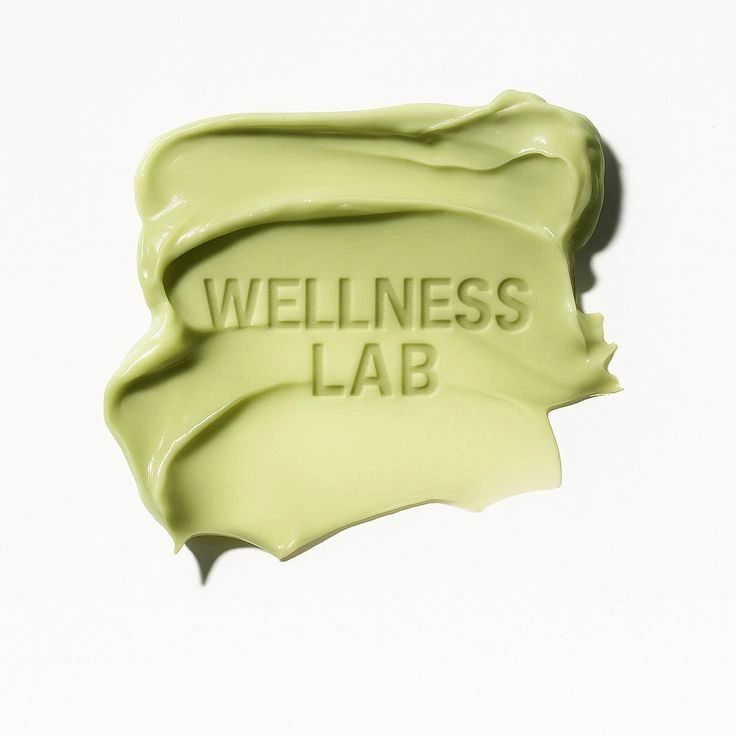

Why You May Need Both for True Healing...
Have you ever walked out of your doctor’s office with a stack of lab results, only to hear the words: “Everything looks normal”?
Meanwhile, you’re sitting there thinking, “But I don’t feel normal.”
You’re bloated after every meal. Your cycle is unpredictable (and exhausting). Your energy crashes in the middle of the day. Deep down, you know something isn’t right — but the labs don’t seem to have the answers.
This is where functional lab testing comes in.
As a practitioner, I’ve seen both sides: the power of conventional labs and the deeper insights functional labs can provide. They’re not in competition with each other — in fact, they work beautifully together.
Let's compare the two and why functional labs might be the missing piece in your healing journey.
What Conventional Lab Testing Does Well
Conventional lab work is the foundation of modern medicine. It’s excellent at:
- Screening for disease: things like diabetes, thyroid disorders, or anemia, and more.
- Catching red flags: such as abnormal cholesterol, liver enzymes, or vitamin deficiencies
- Providing a baseline: doctors rely on these results to rule out serious conditions, such as abnormal cholesterol levels, liver enzyme abnormalities
These labs save lives. They’re essential, and they absolutely have their place.
But here’s the catch: conventional labs are designed to detect disease. If your results fall within the “normal” range, your doctor may tell you that you’re fine — even if you feel anything but fine. “Normal” doesn’t always equal “optimal.”
What Functional Lab Testing Adds
Functional labs don’t just ask, “Are you sick?” They ask, “Are you thriving?”
They’re designed to look at the bigger picture of how your body is functioning. Instead of only looking for disease, they identify imbalances that could be driving your symptoms.
Here are a few examples I often recommend:
- Food Sensitivity Testing
Sometimes bloating, skin issues, or fatigue are triggered by foods you’d never suspect. A food sensitivity test helps uncover hidden triggers that don’t always show up on standard allergy testing. - Hormone Testing
Conventional labs may measure basic hormone levels, but functional hormone testing goes deeper. It looks at how your hormones are metabolized and balanced throughout the day. This is especially helpful if you’re dealing with PMS, irregular cycles, perimenopause, or stubborn weight gain, bacterial - Stool Testing (GI-MAP or similar)
Your gut tells an incredible story. Functional stool testing looks at bacterial balance, yeast, parasites, and even gut inflammation. These markers often explain persistent bloating, constipation, diarrhea, or that feeling of “my digestion just isn’t right.”
Why You Need Both
Here’s the truth: you don’t have to choose one over the other. Conventional labs and functional labs serve different purposes — and together, they give you a much fuller picture of your health.
Think of it like buying a house: conventional labs let you see the outside (does it stand up, are there cracks in the foundation?). Functional labs let you walk inside and notice the details (is there water damage under the sink, does the wiring actually work?). You wouldn’t buy a house without looking at both, right?
My Perspective
I’ve worked with women who were told their labs looked “normal,” but they were still exhausted, bloated, or struggling with their hormones. When we ran functional labs, we discovered imbalances that explained everything: an overgrowth of gut bacteria, estrogen dominance, or food sensitivities that were silently driving inflammation.
The relief they felt wasn’t just about finding answers — it was about finally feeling seen.
That’s why I believe functional labs are such a powerful complement to conventional medicine. They don’t replace your doctor’s tests — they add depth, clarity, and direction to your healing plan.
The Next Step in Your Healing
If you’ve been told your labs are normal but you know in your heart something feels off, functional labs may be the missing piece. They help you connect the dots, uncover root causes, and create a plan that actually makes sense for your body.
✨ You deserve more than “your labs are normal.” You deserve answers — and a path to feeling like yourself again.
If you’re ready to explore functional labs and see how they can guide your healing journey, I’d love to support you. Book your FREE consultation!